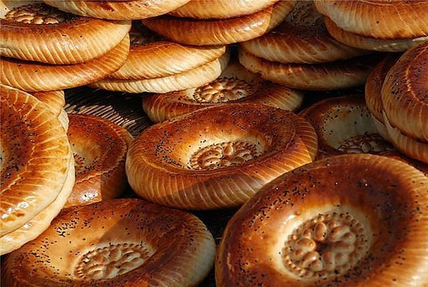
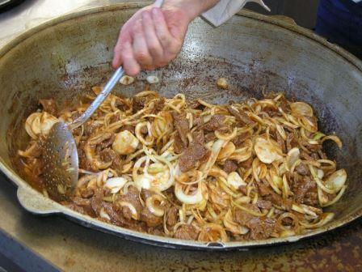

| HOME | HISTORY | PEOPLE | CULTURE | CITIES | GALLERY | AUTHORS |
Tajik cuisine is a traditional cuisine of Tajikistan, and has much in common with Russian, Afghan, and Uzbek cuisines. Plov, also called osh, is the national dish in Tajikistan, as in other countries in the region. Green tea is the national drink. Traditional Tajik meals start with a spread of dried fruit, nuts, halva, and other sweets arrayed on the table in small dishes, and then progress to soup and meat, before finishing with plov.
Palav or osh, generically known as plov, is a rice dish made with shredded yellow turnip or carrot, and pieces of meat, all fried together in vegetable oil or mutton fat in a special qazan over an open flame. The meat is cubed, the carrots are chopped finely into long strips, and the rice is colored yellow or orange by the frying carrots and the oil. The dish is eaten communally from a single large plate placed at the center of the table, often in with one's hands in the traditional way.
Another traditional dish that is still eaten with hands from a communal plate is qurutob, whose name describes the preparation method: qurut is dissolved in water and the liquid is poured over strips of ? thin flaky flatbread. Before serving the dish is topped with onions fried in oil until golden and other fried vegetables. No meat is added. Qurotob is considered the national dish.
Meals are almost always served with non, flatbread found throughout Central Asia. If a Tajik has food but not non, he will say he is out of food. If non is dropped on the ground, people will put it up on a high ledge for beggars or birds. Legend holds that one is not supposed to put non upside down because this will bring bad luck. The same holds true if anything is put on top of the non, unless it is another piece of non.
Traditional Tajik soups include mainly meat and vegetable soups, and meat soups with noodles. Other dishes shared regionally, either as fast food or as an appetizer, include manti, tushbera, sambusa (a triangular pastry with either a meat and onion stuffing or a pumpkin and onion stuffing, baked in a tandoor oven), and belyash.

UP^